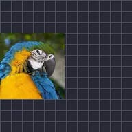

Flou de mouvement

Floute le calque selon ses déplacements, rotations et changements de taille, à partir de ses images clés et des effets de mouvement comme Tremblement automatique et Oscillation. Réglage ajuste le flou. L’aperçu utilise un flou rapide sauf si Flou complet est activé.
Motion Blur étire un calque dans le sens de son déplacement, de sa rotation et de sa croissance. Il lit le mouvement à partir des images clés du calque et des effets de mouvement comme Auto-Shake et Oscillate, il n’y a donc rien à dessiner à la main. Réglage renforce ou atténue le flou, et les interrupteurs Position, Échelle et Angle choisissent les types de mouvement qui produisent du flou.
L’aperçu de l’éditeur affiche une approximation rapide. Activez Flou complet dans la bande d’aperçu pour voir la version précise ; les exports sont toujours précis. Voir L’écran de l’éditeur.
Réglages
| Réglage | Type | Plage | Par défaut |
|---|---|---|---|
| Réglage | Nombre | De 0 à 4 | 1 |
| Position | Activé ou désactivé | – | Activé |
| Échelle | Activé ou désactivé | – | Activé |
| Angle | Activé ou désactivé | – | Activé |